XREA/CoreServer の WordPress を Windows Azure Websites に移植してみる → あと一歩まで行けた
執筆日時：
近年どうもサポートに不安のある CoreServer で運用していた旧ブログを、最新のクラウドプラットフォーム Windows Azure Websites に引越させたいなぁ、と思っていろいろ画策してみた。
Windows Azure の細かいところはまだよくわからないので、ここは WebMatrix の助けを借りようかと思う。結果的には、最後の最後で躓いちゃったけれど……惜しいところまでいったような気がする。
XREA/CoreServer からデータをバックアップ
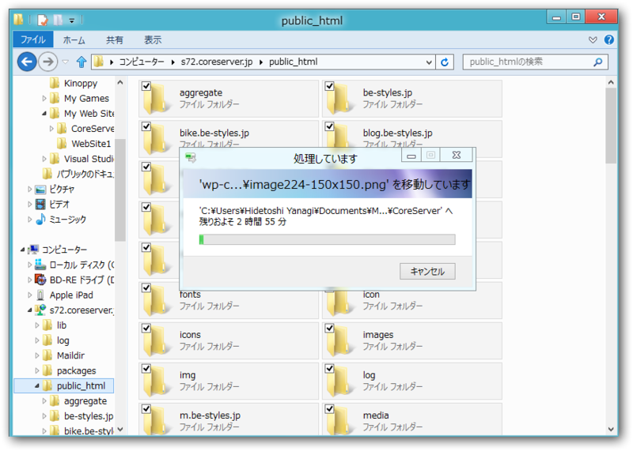
FTP 接続でファイルをローカルに保存。
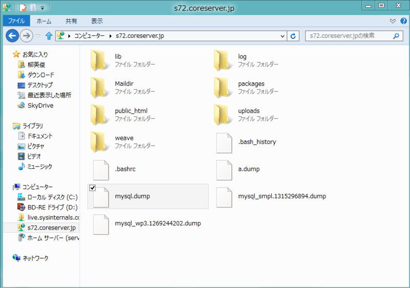
と、そのまえに MySQL データベースのダンプファイルを作成しておく。コントロールパネルのデータベースのところで［複製］ボタンみたいなのを押せば、ルートフォルダにダンプファイルが作成される。
Windows Azure Websites で WordPress サイトを作成・ダウンロード
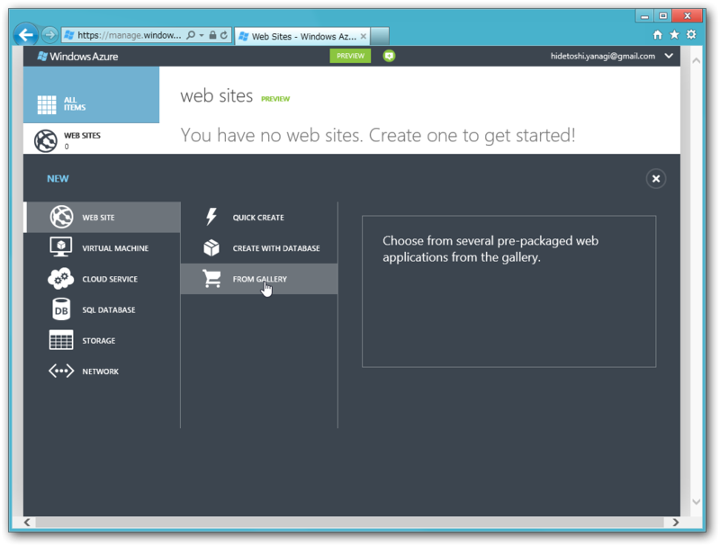 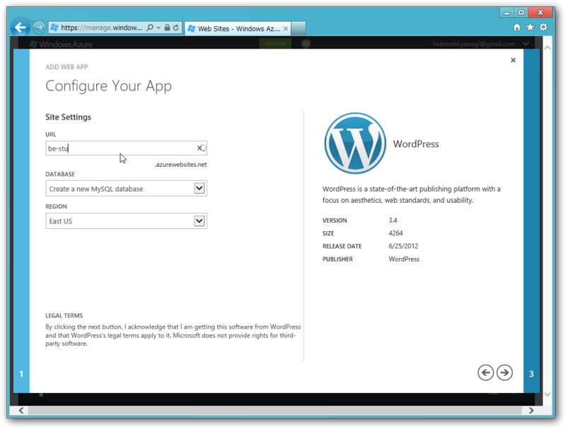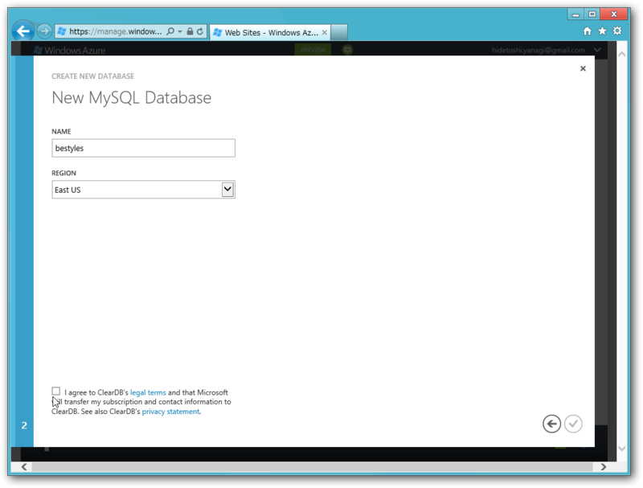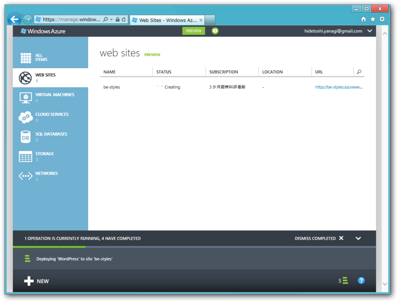
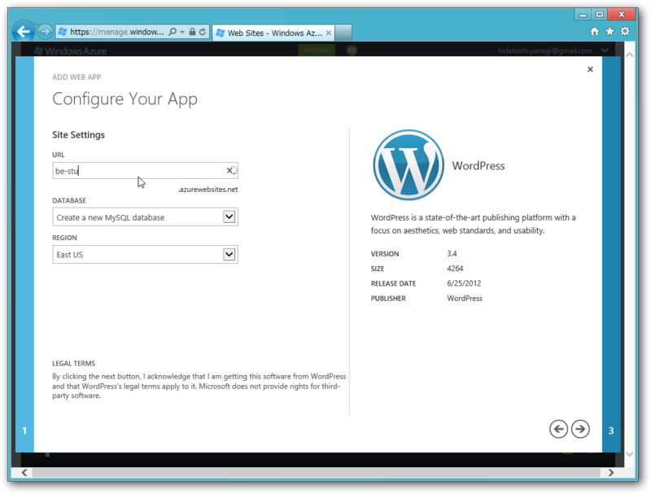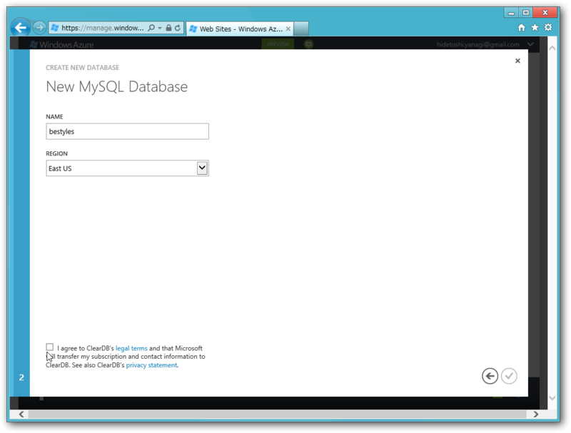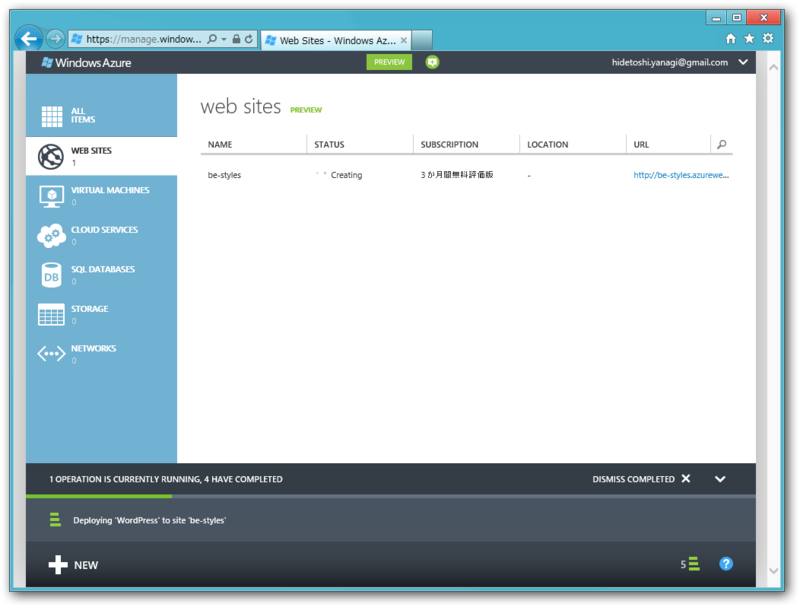
ふつーに Windows Azure Websites で WordPress サイトを作成する。
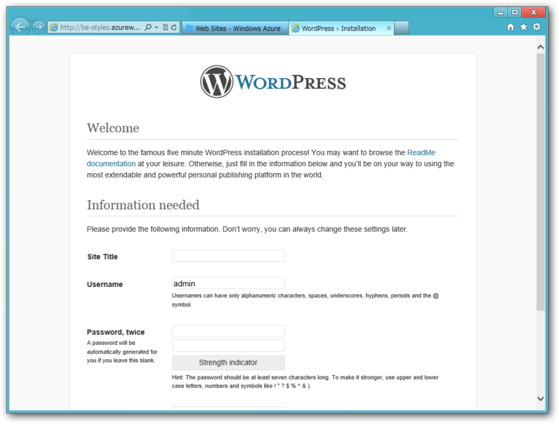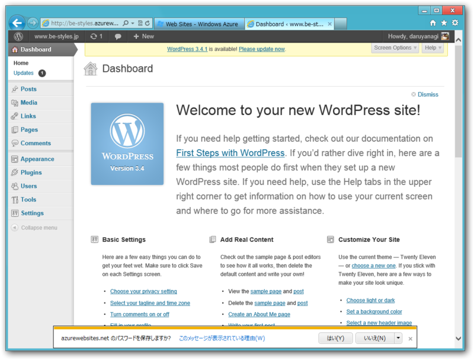
初期設定まで Azure 上でやっておいた。
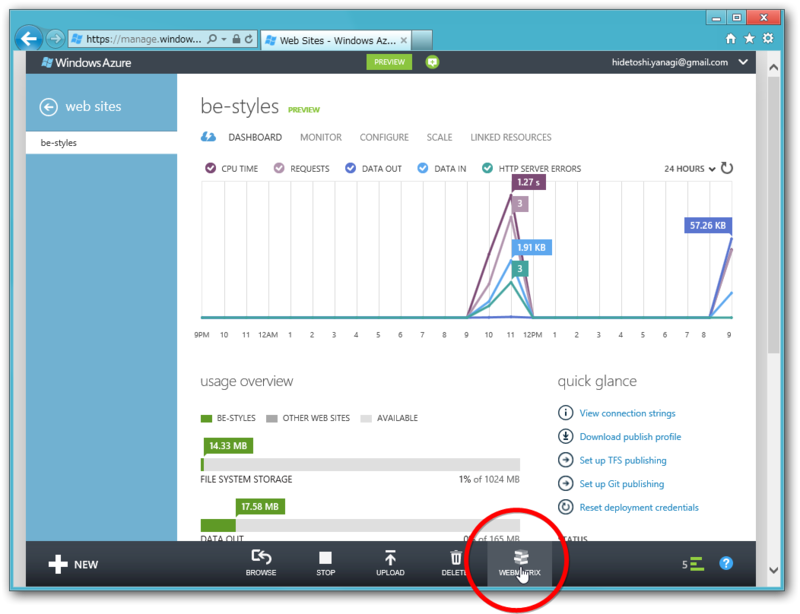
あとは WebMatrix でローカルへダウンロード。 Web サイトのボタンからダウンロードできるはず。これで、 Azure Websites に紐づけられた空の WordPress がローカルで動作する。
ファイルのコピーとデータベースのインポート、ローカルで WordPress を動作させる
先ほどバックアップしたファイルを、Documents/Web Sites/site_name へコピー。つぎに、ダンプファイルをデータベースへインポートする。
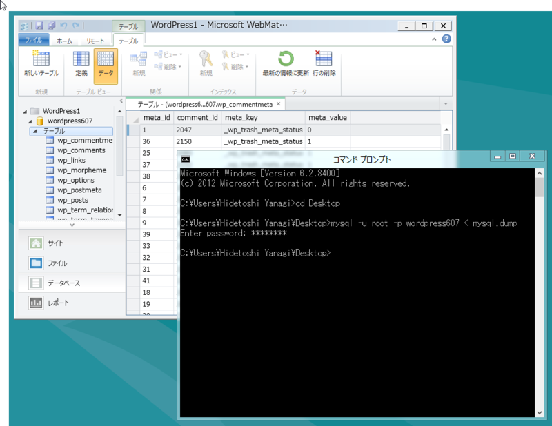
mysql -u root -p DB_NAME < DUMP_FILE_NAME
WebMatrix のデータベースを開いて、旧Webサイトのドメインを“http://localhost:****”（テスト環境のIPアドレス）に書き換えておこう*1。
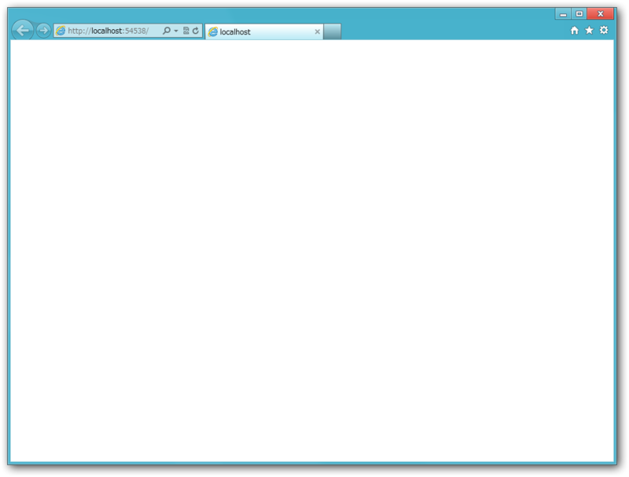
この状態で［実行］してみるが……動かない。焦るなかれ。管理画面（/wp-admin）には入れる。
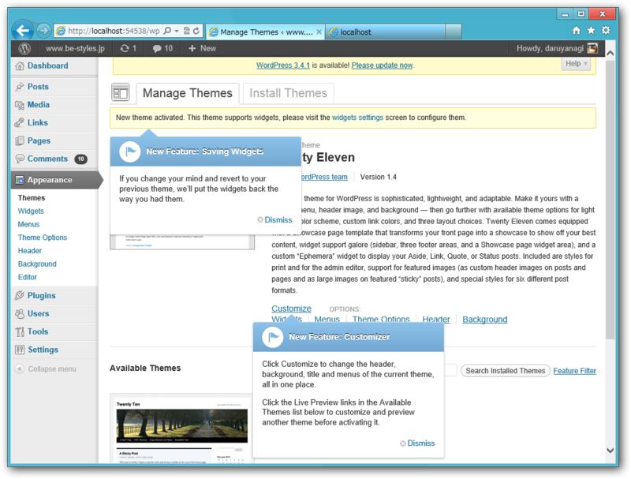
どうやらテーマファイルが認識されていないようだ。デフォルトのテーマを Activate してみる。
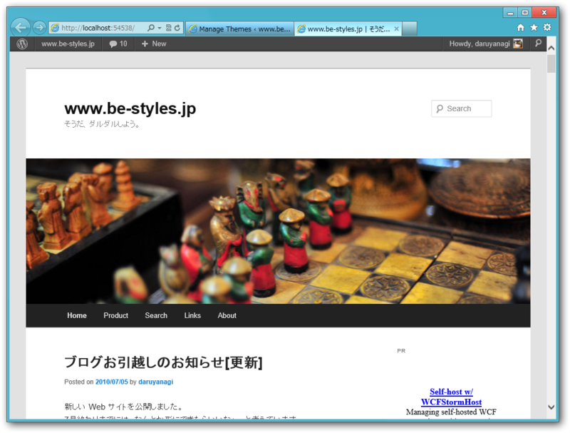
ちゃんと動いた！ WebMatrix では URL Rewrite が動かないようで、パーマリンクをカスタマイズしている場合、個別ページが見られないが、自分で Web.config を書き換えれば動きそうだ。これに関してはまた稿を改める。
Azure へ発行……失敗
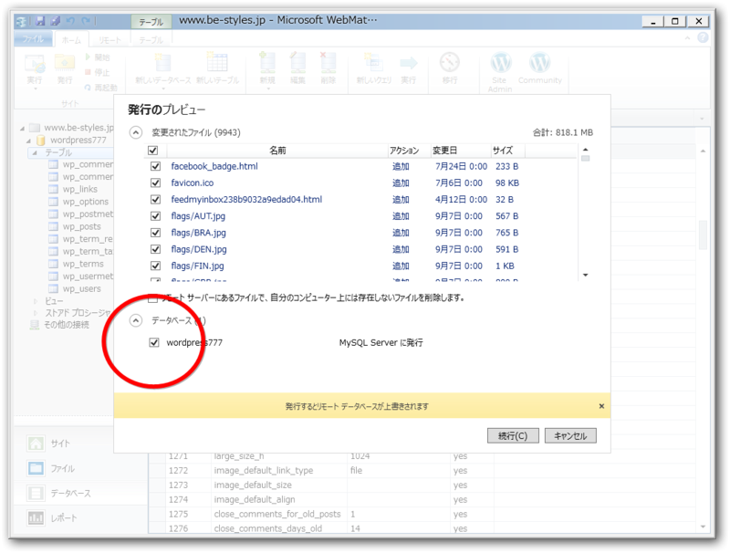
あとは Windows Azure Websites へもう一度アップロード（発行）してやれば引っ越しは完了！……のはずだが。
2012/07/05 0:12 0:18:17: Using ID 'd4c71007-****' for connections to the remote server. 0:20:12: Updating setAcl (****/wp-content). 0:20:12: Using ID '9e5d8bfc-****' for connections to the remote server. 0:22:30: Updating setAcl (****/wp-content). 0:30:00: Adding child sqlScript (MSDeploy.Continous/dbMySql[@path='server=us-cdbr-azure-east-a.cloudapp.net;database=bestyles;user id=b7b0e016175271;allow user variables=True']/sqlScript). 0:30:00: Opening SQL Connection with connection string 'server=us-cdbr-azure-east-a.cloudapp.net;database=****;user id=****;allow user variables=True'. The 'transacted' setting for this connection is 'False'. ERROR: データベースを発行できません。詳細については、"http://go.microsoft.com/fwlink/?LinkId=205387" を参照してください 0:30:02: データベースを発行できません。詳細については、"http://go.microsoft.com/fwlink/?LinkId=205387" を参照してください 0:30:02: 発行できません。 データベースを発行できません。詳細については、"http://go.microsoft.com/fwlink/?LinkId=205387" を参照してください 0:30:02: エラーの詳細: 0:30:02: An error occurred during execution of the database script. The error occurred between the following lines of the script: "145" and "255". The verbose log might have more information about the error. The command started with the following: 0:30:02: "-- -- Dumping data for table `wp_morpheme` --LOC" 0:30:02: Packets larger than max_allowed_packet are not allowed. http://go.microsoft.com/fwlink/?LinkId=178587 0:30:02: Learn more at: http://go.microsoft.com/fwlink/?LinkId=221672#ERROR_SQL_EXECUTION_FAILURE. ： ：
失敗してしまったみたい。“Packets larger than max_allowed_packet are not allowed”っていうのは、データがデカすぎるっていうことなのかな？
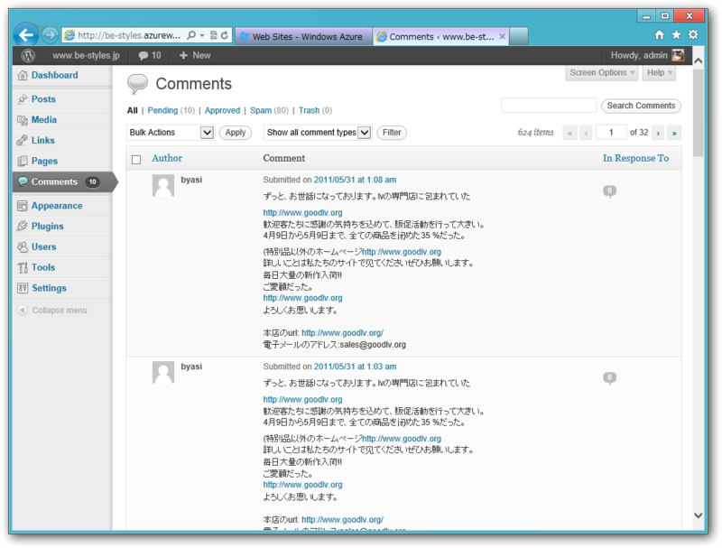
データのインポートは途中まで成功していて、コメントなどは無事インポートされていた*2。あともう少し！！